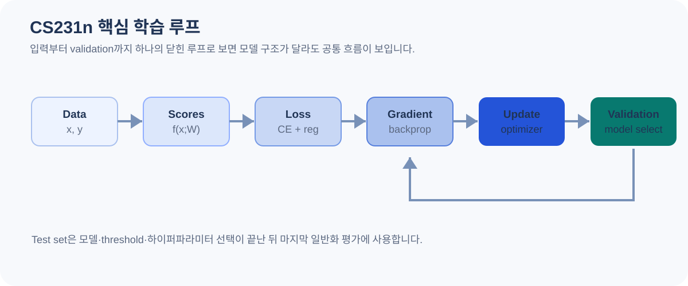

07 · CS231N COURSE MAP
CS231n: 주제별 Vision AI 개념을 연결하는 전체 흐름
Stanford CS231n 공개 노트를 따라 분류의 출발점부터 최적화, 신경망, CNN, 시각화, 전이학습과 현대 Vision 모델까지 연결합니다.
CS231n을 하나의 데이터 흐름으로 보기
CS231n의 공개 노트는 단순히 CNN (Convolutional Neural Network, 합성곱 신경망) 구조만 설명하지 않습니다. 먼저 이미지 분류를 데이터에서 규칙을 학습하는 문제로 정의하고, 선형 분류기와 loss (Loss function, 예측이 정답과 얼마나 다른지 수치로 표현한 값), 최적화와 역전파 (chain rule을 이용해 뒤쪽부터 gradient를 계산하는 방법), 다층 신경망을 차례로 쌓은 뒤 CNN으로 넘어갑니다. 이 순서를 따르면 “Conv를 왜 쓰는가?”보다 먼저 “모델은 무엇을 최소화하며, 파라미터는 어떻게 바뀌는가?”를 이해하게 됩니다.
2026년 공개 페이지의 과제는 고전적인 CNN 학습을 넘어 Transformer 기반 captioning, self-supervised learning, diffusion, CLIP과 DINO까지 연결합니다. 따라서 이 문서는 기초 공개 노트와 최근 강의의 확장 주제를 구분해 설명합니다.

CS231n (Stanford CS231n: Deep Learning for Computer Vision, Stanford의 컴퓨터 비전 딥러닝 강의) 원문을 번역해 옮긴 자료가 아니라, 공개 노트의 학습 순서를 보존하면서 핵심 개념·수식·수치 예시를 Vision AI 관점에서 다시 설명한 요약 지도입니다.
1. Image Classification: 데이터가 곧 경험이다
이미지 분류의 입력은 픽셀 배열 x, 출력은 K개 클래스 중 하나입니다.
가장 단순한 데이터 기반 접근인 k-Nearest Neighbor(kNN (k-Nearest Neighbors, 가장 가까운 k개 샘플을 이용하는 방법))는 새 이미지와 학습 이미지를
직접 비교합니다. 별도의 학습 가능한 가중치는 없지만, 추론 시 학습 데이터를 검색해야
하므로 데이터가 커질수록 비용이 커집니다.
예를 들어 두 3차원 벡터가 [1, 2, 3]과 [2, 2, 5]라면
L1 거리는 3, L2 거리는 √5 ≈ 2.236입니다. 실제 32 × 32 × 3 CIFAR-10 이미지는
3,072차원이므로 단순 픽셀 거리는 배경 이동, 조명, 물체 위치 변화에 매우 민감합니다.
이 한계가 “유용한 특징을 학습하는 모델”로 넘어가는 동기가 됩니다.
| 분할 | 역할 | 하면 안 되는 일 |
|---|---|---|
| Train | 파라미터를 학습 | Test 성능을 보고 반복 수정 |
| Validation | 하이퍼파라미터·모델 선택 | 최종 일반화 성능처럼 보고 |
| Test | 최종 선택이 끝난 뒤 1회 평가 | threshold·증강·구조를 다시 맞춤 |
CS231n은 kNN의 k, 거리 함수 같은 하이퍼파라미터를 validation으로
고르는 흐름을 강조합니다. 데이터가 충분히 큰 경우에는 단일 validation split을,
작은 경우에는 cross-validation을 고려할 수 있습니다. 이미지·영상에서는 같은 원본의
프레임이 train과 test에 동시에 들어가지 않도록 그룹 단위 분리까지
추가로 생각해야 합니다.


2. Linear Classifier: 점수와 loss를 분리해서 보기
선형 분류기는 입력을 바로 클래스 점수로 바꿉니다. 이미지를 펼친 벡터가
x ∈ Rᴰ, 클래스가 K개라면 W ∈ Rᴷˣᴰ,
b ∈ Rᴷ입니다. 출력 score는 아직 확률이 아닙니다.
예를 들어 logit (Logit / raw class score, softmax를 적용하기 전 클래스별 원시 점수)s가 [2, 1, -1]이면 softmax 확률은 대략
[0.705, 0.259, 0.035]입니다. 첫 클래스가 정답이라면
cross-entropy는 -log(0.705) ≈ 0.350입니다. 같은 score에 대해서도
SVM의 multiclass hinge loss는 “정답 점수가 다른 클래스보다 margin만큼 높은가?”를
봅니다. 두 loss는 목적은 분류지만 벌점을 주는 방식이 다릅니다.
전체 목적함수에는 데이터 loss뿐 아니라 regularization이 들어갈 수 있습니다. L2 regularization은 큰 가중치에 비용을 주어 특정 입력 차원에 지나치게 의존하는 해를 억제합니다. loss가 낮다와 test에서 잘 일반화한다는 같은 문장이 아닙니다.
softmax·cross-entropy를 실제 네트워크 학습과 연결해서 보고 싶다면 학습과 평가 문서와 함께 보세요.


3. Optimization과 Backpropagation: W를 어떻게 바꿀까?
모델 구조와 loss를 정해도 파라미터 값을 찾는 문제가 남습니다. 최적화는 loss surface에서 더 작은 값을 만드는 방향을 찾는 과정입니다. 수치 미분은 파라미터를 조금 움직여 loss 차이를 직접 측정하고, 해석적 gradient는 미분 규칙과 chain rule을 이용합니다. 학습에는 해석적 gradient를 사용하고 수치 미분은 주로 gradient (파라미터를 조금 바꿨을 때 loss가 어느 방향으로 변하는지 나타내는 값) check에 사용합니다.
간단히 f(w)=(2w−4)²라면
df/dw = 4(2w−4)입니다. w=1에서 gradient는 -8이고,
learning rate가 0.1이면 w ← 1 - 0.1×(-8) = 1.8로 이동합니다.
최솟값 w=2 쪽으로 움직인 것입니다.
역전파는 “오차를 뒤로 보낸다”는 추상적인 표현보다 계산 그래프의 각 local derivative를 chain rule로 곱해 입력과 파라미터의 gradient를 구한다고 이해하는 편이 정확합니다. 덧셈 노드는 gradient를 그대로 분배하고, 곱셈 노드는 반대쪽 입력을 곱하며, max 계열 연산은 선택된 경로로 gradient가 흐릅니다.


4. Neural Network: 선형 변환 사이에 비선형성을 넣는 이유
다층 신경망은 Linear → activation → Linear → ... 형태로
여러 표현 단계를 만듭니다. 활성함수가 없다면 여러 선형층을 곱해 하나의 선형 변환으로
합칠 수 있으므로 깊게 쌓는 의미가 크게 줄어듭니다.
| 요소 | 핵심 역할 | 실무에서 확인할 것 |
|---|---|---|
| ReLU | max(0, x) 비선형성 | dead activation과 초기화 |
| Sigmoid / tanh | 값을 제한된 범위로 압축 | 포화 영역의 작은 gradient |
| Weight initialization | 초기 signal/gradient 규모 결정 | fan-in/out에 맞는 초기화 |
| Batch Normalization | 미니배치 통계로 중간 활성 정규화 | train/eval 동작 차이 |
| Dropout | 학습 시 일부 활성 무작위 제거 | 추론 시 비활성화되는 방식 |
데이터 전처리도 모델의 일부입니다. 평균 제거, 스케일 조정, 이미지 증강은 입력 분포를 바꿉니다. 학습과 추론에서 채널 순서·값 범위·정규화가 달라지면 네트워크 파라미터가 같아도 다른 문제를 풀게 됩니다.
입력 값을 0~1로 바꾸는 scaling, 데이터 평균·표준편차를 쓰는 standardization, 네트워크 내부의 BatchNorm은 서로 다른 연산입니다.


5. Learning & Evaluation: 학습이 되는지 먼저 진단하기
CS231n의 실전적인 장점 중 하나는 모델을 크게 돌리기 전에 sanity check를 강조한다는 점입니다. 작은 데이터에 과적합 가능한지, 초기 loss가 기대 범위인지, gradient가 수치 미분과 맞는지 확인하면 데이터·loss·backprop 구현 오류를 일찍 찾을 수 있습니다.
| 관찰 | 가능한 원인 | 다음 확인 |
|---|---|---|
| Train loss가 거의 안 감소 | learning rate 부적절, gradient 문제 | 작은 batch 과적합·gradient norm |
| Train↑ / Val 정체 | 과적합 | 증강·regularization·데이터 분리 |
| 둘 다 낮은 성능 | underfitting 또는 입력 정보 부족 | 모델 용량·해상도·라벨 정의 |
| Val 변동이 매우 큼 | validation이 작거나 그룹 편향 | 그룹 split·여러 seed/fold |
Momentum은 이전 업데이트 방향을 누적하고, RMSProp/Adam 계열은 파라미터별 gradient 통계를 이용해 update scale을 조정합니다. optimizer 이름만 바꾸는 것보다 learning rate와 scheduler, batch size, weight decay가 함께 만들어 내는 실제 update 규모를 보는 것이 중요합니다.
하이퍼파라미터 탐색은 선형 간격보다 log scale이 적합한 값이 많습니다. 예를 들어 learning rate 후보를 0.001, 0.002, 0.003만 보는 것보다 10⁻⁵~10⁻² 같은 범위를 로그 공간에서 탐색하는 편이 합리적입니다. 최종 선택은 validation에서 하고 test는 마지막까지 격리합니다.


6. Convolutional Network: 공간 구조를 보존한 채 특징을 계산하기
완전연결층은 이미지를 펼치지만 Conv는 높이·너비 구조를 유지하며 지역 수용영역을
공유 커널로 계산합니다. 출력 채널 하나는 일반적인 groups=1 Conv에서
모든 입력 채널을 함께 사용합니다.
입력이 [B,3,224,224]이고 3×3, stride 1, padding 1,
출력 64채널 Conv라면 출력은 [B,64,224,224]이고 bias를 포함한
파라미터 수는 64×3×3×3+64 = 1,792입니다. stride 2라면 공간 크기는
112×112로 줄어듭니다.
Pooling과 stride convolution은 공간 해상도를 줄이면서 더 넓은 문맥을 효율적으로 다루게 하지만 작은 물체·미세 결함 정보를 잃을 수 있습니다. 따라서 제조 Vision에서는 “표준 backbone이 원래 그렇게 한다”보다 실제 결함 크기가 downsampling 후 몇 cell로 남는지 계산하는 것이 중요합니다.
CNN의 원리에서 커널 한 칸 계산과 채널 shape를, CNN 문서의 ResNet 섹션에서 residual 연결을 수치 예시로 확인할 수 있습니다.


7. CNN Architecture: 블록 이름보다 계산과 정보 흐름을 보기
CS231n 노트는 AlexNet, ZFNet, VGG 같은 대표 구조를 통해 작은 커널의 반복, 공간 downsampling, 채널 증가, 계산량을 설명합니다. 이후의 ResNet은 shortcut을 도입해 매우 깊은 네트워크의 최적화를 개선했습니다. 역사적 구조를 외우는 것보다 해상도·채널·수용영역·파라미터·FLOPs가 단계마다 어떻게 바뀌는지 읽는 능력이 더 중요합니다.
| 관점 | 질문 | 예시 |
|---|---|---|
| Spatial | H×W가 언제 줄어드는가? | 224→112→56 |
| Channel | C가 왜 늘어나는가? | 64→128→256 |
| Block | skip/add/concat이 있는가? | ResNet add, U-Net concat |
| Head | 최종 출력 단위는? | K logits, boxes, masks |
| Compute | 병목 연산은 어디인가? | 고해상도 3×3 Conv |
분류 backbone의 마지막 특징을 detection·segmentation head에 재사용하면 같은 backbone이라도 출력 구조와 loss가 달라집니다. 따라서 “YOLO는 CNN이다”처럼 하나의 이름으로 끝내지 말고 backbone, neck, task head를 분리해서 읽는 습관이 필요합니다.


8. Understanding CNN: 모델이 무엇을 봤는지 확인하는 도구
특징 시각화는 모델 설명의 보조 도구이지 “채널 17은 눈을 본다”처럼 의미를 확정하는 증명은 아닙니다. 최근접 이미지, 임베딩 시각화, saliency gradient, feature activation maximization 등은 서로 다른 질문에 답합니다.
| 방법 | 보는 것 | 주의점 |
|---|---|---|
| Nearest neighbors | 특징 공간에서 가까운 샘플 | 거리 metric과 feature layer 의존 |
| t-SNE | 고차원 특징의 2D 배치 | 전역 거리·cluster 크기 과해석 금지 |
| Input gradient | 출력에 민감한 입력 방향 | gradient 크기 = 인과적 중요도는 아님 |
| Activation maximization | 특정 뉴런을 크게 만드는 입력 | regularization·초기값에 따라 형태 변화 |
모델이 배경, 날짜 watermark, 특정 설비 색상 같은 shortcut을 사용하면 test 환경 변화에서 성능이 무너질 수 있습니다. 시각화는 이런 가설을 만드는 데 유용하지만 최종 판단은 controlled ablation과 분리된 test 데이터로 검증해야 합니다.


9. Transfer Learning: 처음부터 학습할지, 어디까지 풀지
사전학습 모델은 이미 일반적인 시각 특징을 학습한 상태이므로 데이터가 적을 때 유용한 출발점이 됩니다. 하지만 원 데이터와 대상 데이터의 차이가 크면 마지막 head만 바꾸는 것으로 충분하지 않을 수 있습니다.
| 대상 데이터 | 일반적 시작점 | 확인할 실험 |
|---|---|---|
| 작고 원 데이터와 유사 | backbone freeze + 새 head | linear probe vs 일부 fine-tune |
| 중간 규모 | 상위 block부터 점진적 fine-tune | layer별 lr·overfitting |
| 크고 도메인 차이 큼 | 전체 fine-tune 또는 scratch 비교 | 사전학습 이득이 실제 있는지 |
fine-tuning할 때 backbone에는 작은 learning rate, 새 head에는 더 큰 learning rate를 주는 방식도 사용할 수 있습니다. BatchNorm 통계를 고정할지 업데이트할지도 작은 batch에서는 중요한 선택입니다. 어떤 전략이 항상 정답인 것은 아니므로 동일 split에서 비교해야 합니다.

10. 2026 확장: Transformer · SSL · Diffusion · CLIP · DINO
현재 CS231n 공개 페이지의 Spring 2026 과제에는 고전 CNN 노트 이후의 주제가 추가되어 있습니다. 이 부분은 오래된 공개 note 본문과 구분해서 보는 것이 정확합니다.
| 주제 | 핵심 아이디어 | Vision AI에서의 의미 |
|---|---|---|
| Transformer | token 관계를 attention으로 계산 | ViT·captioning·multimodal의 기반 |
| Self-supervised learning | 라벨 없이 representation 학습 | 대규모 비라벨 이미지 활용 |
| CLIP (Contrastive Language–Image Pre-training, 이미지와 텍스트 표현을 함께 학습하는 모델) | image-text 대응을 contrastive하게 학습 | zero-shot·검색·멀티모달 표현 |
| DINO (self-DIstillation with NO labels, 라벨 없이 teacher–student 방식으로 표현을 학습하는 방법) | teacher-student self-distillation | 라벨 없이 강한 시각 특징 학습 |
| Diffusion | 노이즈가 섞인 샘플의 복원 과정을 학습 | 생성·조건부 생성·representation 연결 |
DINO류에서는 같은 이미지의 서로 다른 view를 teacher와 student에 넣고, student가 teacher의 target distribution을 맞추도록 학습합니다. teacher는 보통 student parameter의 EMA로 갱신됩니다. CLIP은 이미지와 텍스트 표현을 같은 embedding 공간에서 대응시키는 contrastive objective를 사용합니다. 두 방법 모두 “라벨이 없다”는 공통점만으로 같은 알고리즘은 아닙니다.
Diffusion은 forward 과정에서 점차 noise를 추가하고, 모델이 reverse 방향의 denoising 정보를 예측하도록 학습합니다. Transformer를 denoiser로 쓰는 DiT처럼 CNN 이후의 시각 모델은 서로 결합되기도 합니다. 이 주제들은 별도의 심화 문서로 확장할 가치가 있으며, 여기서는 CS231n 전체 흐름에서의 위치를 잡는 데 집중합니다.
패치 임베딩·CLS·Q/K/V·attention 계산은 Vision Transformer 문서에서 단계별로 설명합니다.


11. 이 사이트에서 어떤 순서로 다시 보면 좋을까?
| CS231n 개념 | 이 사이트의 상세 문서 | 핵심 확인 |
|---|---|---|
| 입력·전처리 | 이미지와 텐서 | [B,C,H,W], RGB, normalization |
| Conv·CNN | CNN의 원리 | kernel, channel, receptive field |
| 학습·검증 | 학습과 평가 | split, CV, threshold, metrics |
| CNN architecture · ResNet | CNN · ResNet | identity/projection shortcut |
| Transformer | Vision Transformer | patch, Q/K/V, MSA, encoder |
| Segmentation · U-Net | Vision Tasks · U-Net | encoder-decoder, skip concat |
CS231n을 한 번 읽고 끝내기보다, 위 문서에서 shape와 숫자를 직접 계산한 뒤 다시 원 강의 노트를 보면 용어가 훨씬 구체적으로 보입니다. 특히 모델을 바꿀 때마다 입력 → score/logit → loss → gradient → update → validation 흐름을 같은 틀로 적어 보는 것이 좋습니다.
출처와 더 확인할 자료
본문은 이해를 위한 한국어 해설입니다. 도식은 직접 재구성했으며, 가상 수치와 단순화한 구조는 해당 위치에 표시했습니다.
- Stanford CS231n · 공개 노트 ↗Image classification, linear classifier, optimization, backpropagation, neural networks, CNN, visualization, transfer learning으로 이어지는 공식 공개 노트의 기준입니다.
- CS231n · Image Classification ↗kNN, 거리 함수, train/validation/test와 hyperparameter 선택.
- CS231n · Linear Classification ↗score function, SVM (Support Vector Machine, margin을 이용해 분류 경계를 학습하는 모델)/Softmax loss, regularization.
- CS231n · Convolutional Networks ↗Conv/Pooling layer의 공간 구조와 대표 CNN architecture.
- CS231n · 2026 강의 슬라이드 ↗최근 강의의 Transformer, self-supervised learning, DINO, diffusion 등 확장 범위를 확인하는 공식 자료.